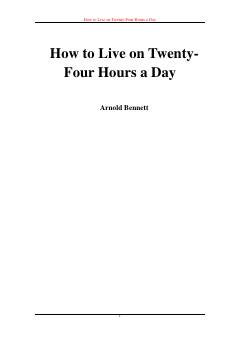

HTKunlik 24 soatdan unumli foydalanish va hayot sifatini oshirish bo'yicha amaliy qo'llanma.
Ushbu kitob insonlarga o'z vaqtini yanada samarali boshqarish va kunlik 24 soatdan unumli foydalanish yo'llarini o'rgatadi. Muallif ish va shaxsiy hayot o'rtasidagi muvozanatni saqlash hamda bo'sh vaqtni rivojlanish uchun sarflash bo'yicha amaliy maslahatlar beradi.